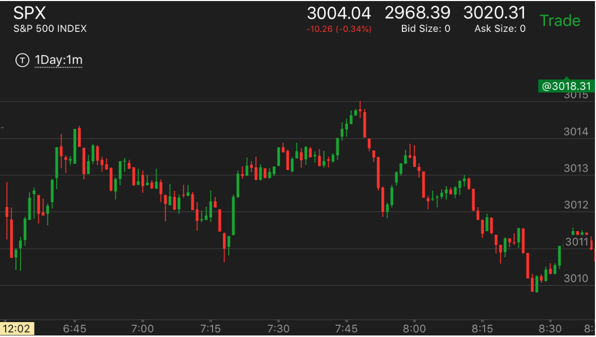
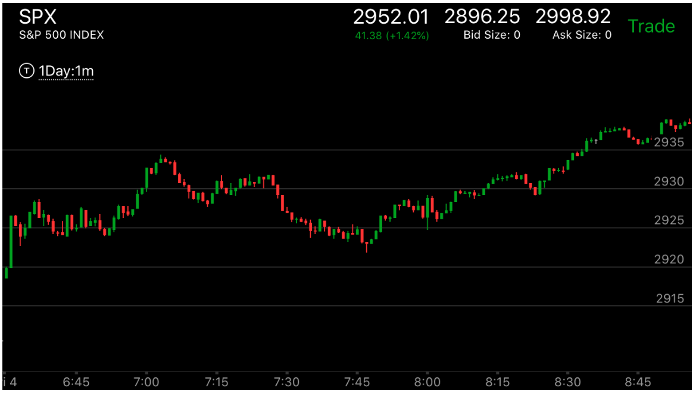
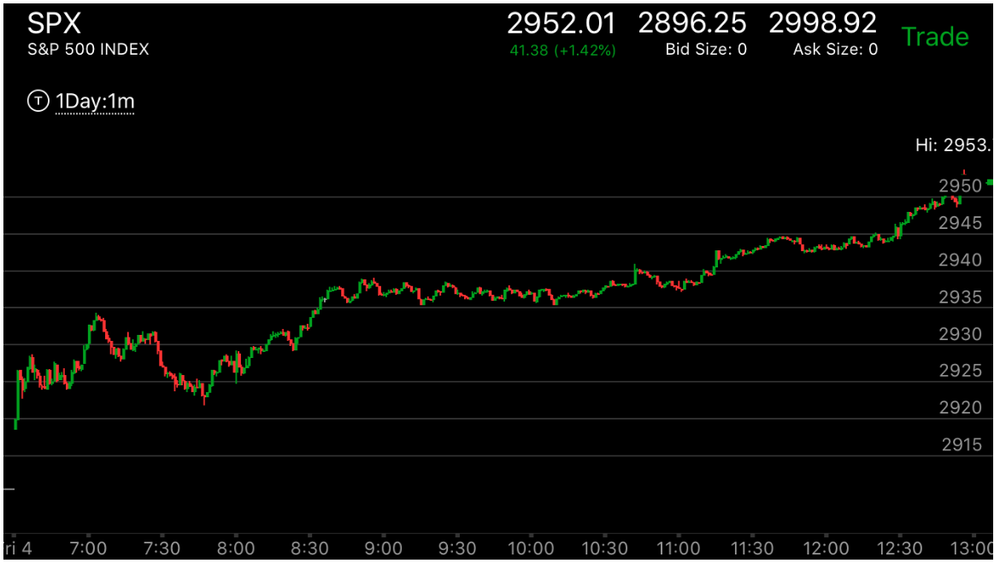
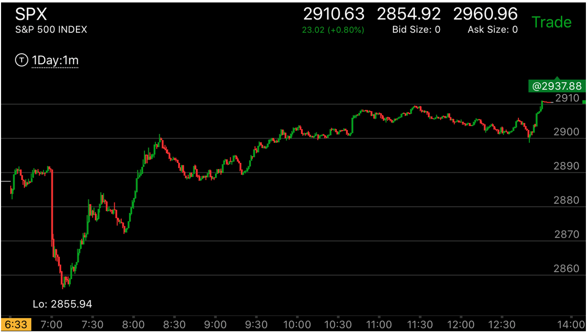
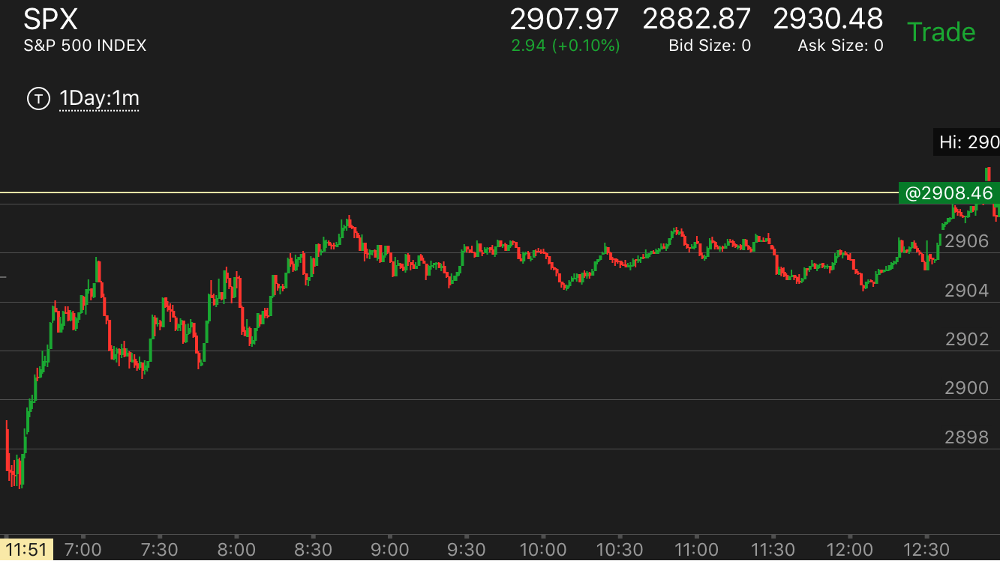
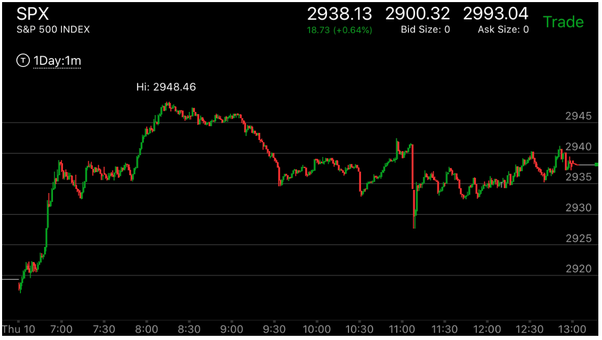

快慢极点走势
- 这个走势是走平后再次运动的走势的一种，以上涨为例，它快速冲高，前面的真空没有填补，但是如果已经填补了。那么不会出现这个
走势。
- 这个走势有很多细节。但是关键在于大势的判断，是反转还是填补真空。从大势就可以判断出来。
- 快速上涨，创走势新高，然后拉回很小，不到填补真空的地方，再次上涨，要么双顶，要么稍微高一些。两者要么时间距离很长，要么速度很慢，总之不能距离很近，幅度很大。
如果这样，就成了两段上涨走势，会全面反转的。
- 它到了新高点后，立刻下跌，速度不一定很快，但是它形成了加速状态，最常见的是下跌走平，再次下跌。
要知道下跌走平再次下跌本身就是加速状态。而两段走势，下跌后，立刻反弹很大，
在高点走平，这样就成了两段走势的下跌。结合前面的走势，可以看到它是两段反转还是填补真空。
- 这个走势关键是在再次上涨的时候，它拉回，然后越过前面高点的时候，速度很慢，停留几分钟，然后才越过，如果没有拉回，
或者直接越过，那么可能是反转走势。但是要看大势的判断。
- 它反转填补真空的时候，非常像一个反转走势，就是一开始下跌速度比较快，然后反弹，时间很长，然后再次下来。
一个区别是，如果是反转走势，再次下来的时候，会快速通过走势的开始点。但是如果是填补真空，那么在再次快速下跌后，不会
超过，而是停留的前面的加速点附近，停留2，3分钟。这样就填补了真空。
- 这个走势是符合相对论反直觉的。它的第一个高点很快，第二个高点上涨很慢而且立刻下来，跌幅更深，很弱。
- 要区别它是反转还是填补真空，关键在于前面两个新高的时候，有没有到达顶部。第二个顶部没有加速运动
- 下跌走势也一样。

图示：开盘后，下跌速度快，上涨速度慢，6：40才算第一浪，转折后，它冲高，立刻拉回。
这个就是快慢点走势。其实也是反常两段走势。它大幅拉回后，填补真空。然后再次冲高，冲高走平，再次冲高，这样就
形成了加速。而且也创了新高。


图示：这个走势的开盘第一浪比较大。第一浪后，拉回，它再次上涨。幅度不大，出现新高后，立刻拉回。
说明这个走势没有结束。6：50它缓慢走出新高。似乎是一个走平后上涨的走势。但是其实不是，它拉回后，上涨中间停止了好几分钟。
7：00上涨的幅度很慢。不是一个加速走势。7：10开始回调。回调的样子很像一个反转大跌的走势。但是并非如此。而是快慢顶点走势。
因为没有反转。这个走势其实也是一个强大的第一浪的走势。它部分填补真空后，大涨。

图示：7：15从低点开始上涨。7：25快速上涨，然后拉回，再次上涨创新高。这次上涨幅度不大，速度也相对慢。然后拉回。虽然它拉回的速度不快。
但是它的开始很快，7：35从顶点没有停留，就下来了。7：50基本填补了真空。然后大涨，超过了7：35的高点。

图示：8:10快速上涨后，走平，再次上涨，创新高后，立刻拉回，拉回后，不断的下跌，中间没有反弹。填补真空后，在跨越点边缘停留。走平。这样表示未来一定会超过
原来的高点。10：30快速冲高，拉回一些后，再次缓慢冲高，创新高，然后下跌不断的走低。几乎低于10：30开始的低点。然后收盘前大涨。越过前面高点。

图示：1：00开始反弹了。1：45它出现走势高点后，拉回很小，再次冲高，立刻下跌，没有反弹，直到填补大部分真空后，走平，然后2：30大涨。超过了1：45的走势高点。

图示：开盘后，6：40出现了大涨。大涨后，它走平后，继续快速上涨，然后立刻大幅回调。
可以想到，它的这个高点涨幅不大，而回拉很大。是个快慢极点走势。填补了第二段上涨的真空后，继续上涨。它在8：30越过前面的高点后，
虽然经常回到高点以内。但是真的跨越点其实是7：50形成的平坦顶部。长时间震荡的点都高于这个点。然后它在收盘前继续上涨。

图示：第一浪是6：50开始的大涨。前面的小幅上涨其实是震荡的一部分，这个只有看盘前走势才清楚。
7：00冲高到了2939，立刻拉回，拉回的时候，走平，再次下跌。然后反弹，不到高点，就开始长时间走平。这样，这个走势虽然是，
上涨后，走平再次上涨。但是具体观察它的样子，它再次上涨时候，非常谨慎，所以不是一个加速走势。它仍然处于升势。这个走势的第一浪很快，幅度很大，而第二浪幅度相对不大，这样就成了快慢极点走势。
它会部分填补真空后，继续大涨。